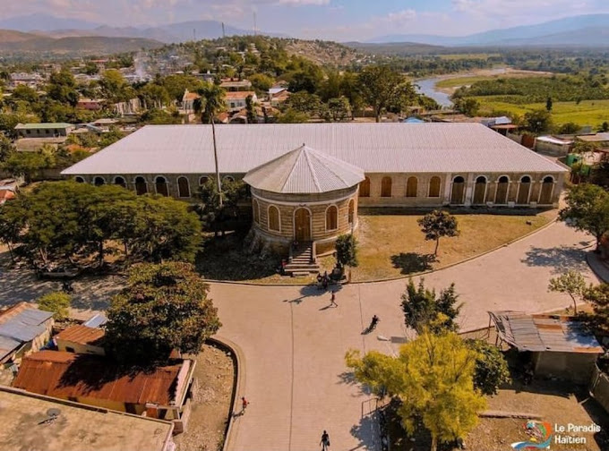
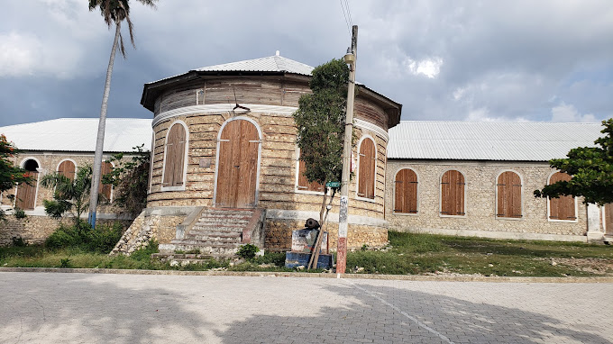

Palais aux 365 portes
- 
- 
Le Palais de la Belle Rivière, fut construit en 1820 par Louis Dupeyrac pour servir de résidence à Henri 1er, alors roi d’Haïti.
Encore en chantier lors de la chute du royaume du Nord, en 1820, il resta inachevée. Le Palais de la Belle-Rivière, est le second Palais en importance construit par Christophe, après celui de Sans-Souci à Milot.
Le Palais présente un plan rectangulaire de 68 m de long sur 11 m de large. A sa façade Ouest est adossée une vaste rotonde large de 12 mètres de diamètre. Les murs du palais sont en maçonnerie de pierres et de briques d’argile liées par un mortier de chaux.
Lors de la première campagne de sauvegarde de nos monuments historique, d’importants travaux de restauration furent entrepris en 1932. À cette occasion, il fut décidé de doter le rez-de-chaussée du palais d’une couverture en tôle ondulée soutenue par une charpente en bois. La structure du palais, alors en ruine, fut consolidée, ses murs revêtus d’un enduis de ciment et ses nombreuses ouvertures dotées de volets en bois. Bien que cette intervention n’a pas été conforme aux règles de l’art de la restauration, elle a permis de freiner la détérioration du monument historique, assurer sa protection contre les intempéries et permis de transmettre aux générations futures, avec les moyens et les connaissances techniques de l’époque, un formidable témoin de la vision d’Henri Christophe.
Par arrêté présidentiel en date du 23 août 1995, le Palais de la Belle-Rivière fût classé Patrimoine National sur avis technique favorable de l’ISPAN. »